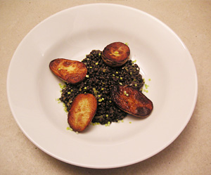

Beluga Linsen mit jungem Lauch nach Rhyschänzli-Art
5,5 von 6250 g Beluga Linsen mit Suppengemüse kochen bis die Listen knapp gar sind, Gemüse entfernen und die Linsen abgiesen. In viel Butter der in Streifen geschnittenen Lauch kurz andämpfen, Linsen dazu geben. Mit einem Gutsch Weisswein ablöschen. Mit etwas halb Rahm sowie Salz und Peffer abschmecken und mit Bratkartoffeln servieren.
